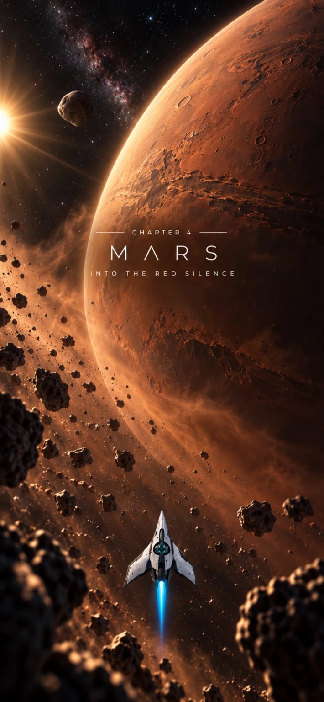

01
Aim. Release.Прицелься. Отпусти.
Choose the launch direction and strength. A small change can send your ship along a very different arc.Выбери направление и силу запуска. Даже небольшое изменение может отправить корабль по совсем другой дуге.
A journey through the Solar SystemПуть через Солнечную систему
Set your course, lean into gravity, and slip through the Ark. A space arcade about timing, precision, and finding your own way.Задай направление, используй гравитацию и пройди через Арк. Космическая аркада о точности, выборе момента и поиске своего пути.
iPhone & iPad English / Русский

01 / The flight01 / Полёт
A simple launch opens up a world of trajectories. Read the field, choose your moment, and let the journey unfold.За простым запуском — множество траекторий. Изучи поле, выбери момент и посмотри, куда приведёт твой импульс.
Choose the launch direction and strength. A small change can send your ship along a very different arc.Выбери направление и силу запуска. Даже небольшое изменение может отправить корабль по совсем другой дуге.
Planets, moons, rings, and moving asteroids shape the space between you and the destination.Планеты, спутники, кольца и движущиеся астероиды меняют пространство между тобой и целью.
Reach the Ark with precision. Return to a level, refine your flight, and improve your best result.Доберись до Арка и пройди точно. Возвращайся на уровни, оттачивай полёт и улучшай лучший результат.
02 / The journey02 / Путь
From Mercury to Deep Space. Each chapter brings its own atmosphere and a different way to think about the next launch.От Меркурия до дальнего космоса. У каждой главы — своя атмосфера и новый повод иначе взглянуть на следующий запуск.
Six levels in every chapter. Your next best flight is still out there.В каждой главе — шесть уровней. Твой лучший полёт ещё впереди.
Quick answers, troubleshooting, and a direct line to the developer.Ответы на вопросы, помощь с неполадками и прямая связь с разработчиком.